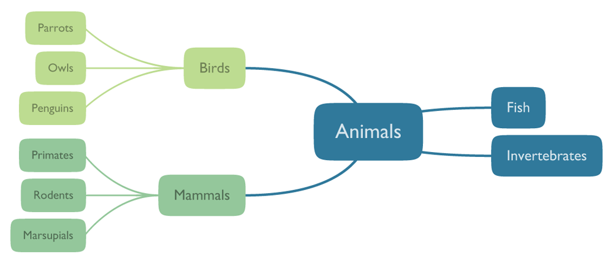

Quickstart
twyg expects plain-text JSON files as input that describe the topology of the tree and the text labels of the individual nodes. Below is a sample JSON file and the corresponding graph that was generated using the default configuration:
{
"Animals": [
{"Birds": [
"Parrots",
"Owls",
"Penguis"
]},
{"Mammals": [
{"Primates":
"Harry the Monkey"
},
"Rodents"
]},
"Fish",
"Invertebrates"
}

To generate this graph as a PDF file, create a text file
example.json containing the JSON data above and then execute
this command:
twyg.py example.json example.pdf
You can also specify the configuration and colorscheme to use as shown below (see the examples page for samples of the built-in colorschemes and configurations). The output format is determined by the extension of the output file, which in this case will be PNG:
$ twyg.py --config nazca --colorscheme azure example.json example.png
Refer to the documentation for a full description of all available command line options and to learn how you can create your own custom configurations.